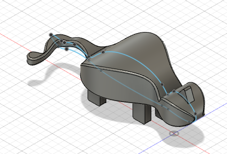
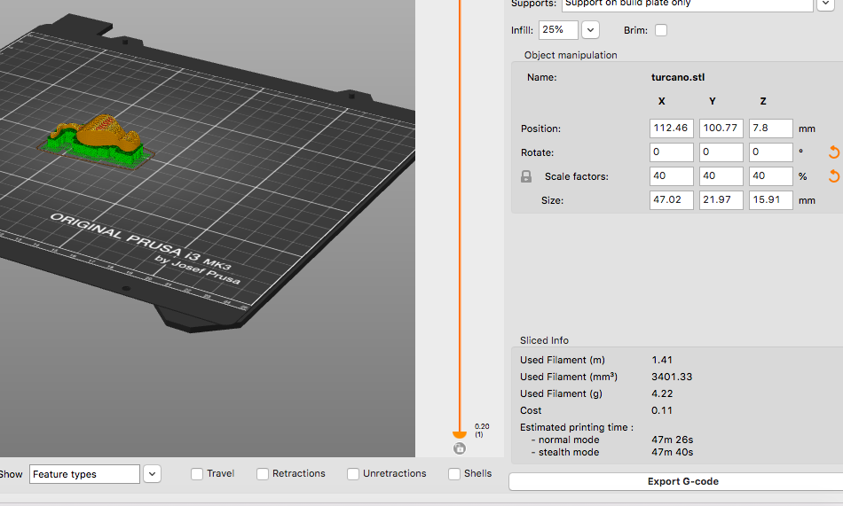
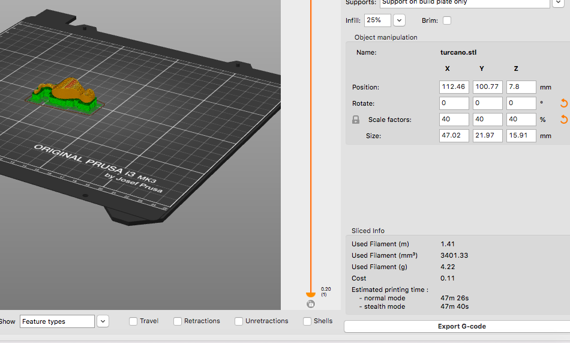

This week I wanted to make a chain necklace with a pendant. The pendant would be designed as a circle surrounding a neuron (an attempt to design this neuron well on fusion was made).
After putting the stl file into the prusa slicer software, I scaled down the object until it fit on the board, put build-plate support strucutes, and sliced.
While taking off the support structure, I accidentally broke 3 links on my chain. I had originally put a hole in the back-most link in fusion to account for the chain being a smaller circumference than my head, but now that I broke that link and two others, I had three pieces of chain. I considered using a different material to link them together, but then I decided to use my pliers to break the links strategically so that they could be joined into a single chain disconnected at the back.

I used a plier to break the link at a single point, then I looped in two other links part of the necklace and superglued the gap together.
I now solved the issue of the chain being apart in visible areas, but rather than use a final link to join the back, I used a paper clip so that I could reliably open and close the metal and link together my chain temporarily. I put hot glue on the ends of the paper clip for increased comfort.


That is the completed version of the necklace with the pendant.
I had also designed a tiny object to experience changing the filament and modeling with fusion further.
 
